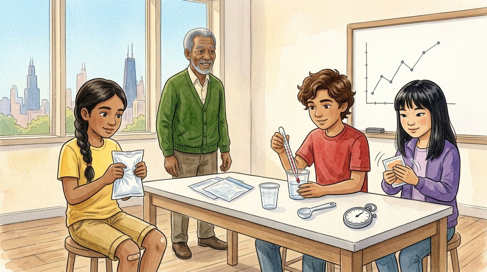

Grade 7 · Science · MS-PS1-6
The ice pack that needs no freezer
A story about a soccer injury, an ice pack that gets cold without a freezer, and a class that designs its own hot and cold packs.
La bolsa de hielo que no necesita congelador. Un cuento sobre una lesión en el fútbol, una bolsa de hielo que se enfría sin congelador y una clase que diseña sus propias compresas calientes y frías.
Science words you will learn
Tap a green word to see what it means.
Toca una palabra verde para ver qué significa. Con la ayuda activada, verás también la definición en español.
The story
El cuento está en inglés. Pulsa «Listen to the story» para escucharlo y toca las palabras verdes cuando no entiendas una.
At Saturday's soccer game, Salma twisted her ankle. The coach took a white plastic pack out of the first-aid kit, squeezed it hard and shook it. In a few seconds, it was ice cold. "How did it get cold without a freezer?" Salma asked on Monday. Mr. Mensah smiled. "Let's find out."
He cut open an old cold pack carefully. Inside was a small bag of water and some white solid grains. "When you squeeze the pack, the inner bag breaks, and the solid dissolves in the water," he said. "That process absorbs from its surroundings, so the drops."
Elías put a thermometer in a cup of water: 22 degrees Celsius. Mr. Mensah added two spoonfuls of the grains and stirred. The number went down: 15, 10, 6 degrees. Elías touched the cup. "It's freezing!" "A process that absorbs thermal energy is ," said Mr. Mensah. "The energy goes into the mixture, so everything around it, like your hand or Salma's ankle, gets colder."
Sophia held up a hand warmer from her winter coat. "And this one gets hot." "Open it and see," said Mr. Mensah. Inside was a dark powder. "That's mostly iron powder. When air gets in, the iron reacts with oxygen and rusts very quickly. That reaction releases thermal energy, so it's ." "So it's rust that keeps my hands warm?" asked Sophia. "Fast rust," said Mr. Mensah.
Then he gave them a design challenge. "Design a pack to keep a sandwich cold during a field trip. Here are the : it must get at least 10 degrees colder than the room, stay cold for 20 minutes, be safe and fit in a lunch bag."
Salma's team built a first with a zipper bag, water and one spoonful of the grains. It got only 5 degrees colder. "Not enough," said Salma. They tried again with three spoonfuls, and this time it dropped 13 degrees. But after 12 minutes, it was almost at room temperature again.
"What can you change?" asked Mr. Mensah. Elías wrapped the bag in a thick towel and put it inside a foam box. This time, the pack stayed cold for 25 minutes. "The towel and the box slow down the energy coming in from the room," Elías said. "We met all the criteria!"
Before cleaning up, Mr. Mensah reminded everyone to wash their hands and never to taste the chemicals. "Engineers test, change one thing, and test again," he said. Salma looked at her ankle, which felt much better. "Next time I'm bringing our design to the game," she said. "And a sandwich."
Glossary
- thermal energy
- The energy of the moving particles in a substance. More thermal energy means a higher temperature.
- energía térmica: La energía de las partículas en movimiento de una sustancia. Más energía térmica significa una temperatura más alta.
- exothermic
- Describes a reaction that releases thermal energy, so the surroundings get warmer.
- exotérmico: Describe una reacción que libera energía térmica, por eso lo que la rodea se calienta.
- endothermic
- Describes a process that absorbs thermal energy, so the surroundings get colder.
- endotérmico: Describe un proceso que absorbe energía térmica, por eso lo que lo rodea se enfría.
- temperature
- A measure of how hot or cold something is.
- temperatura: Una medida de qué tan caliente o frío está algo.
- criteria
- The goals a design must meet to be successful.
- criterios: Las metas que debe cumplir un diseño para tener éxito.
- prototype
- A first model of a design, built to test it and make it better.
- prototipo: Un primer modelo de un diseño, construido para probarlo y mejorarlo.
Questions
Choose the correct answer. If you make a mistake, the story shows you where the answer is.
Elige la respuesta correcta. Si te equivocas, el cuento te muestra dónde está la respuesta.
-
Question A. What happens when you squeeze an instant cold pack?
¿Qué pasa cuando aprietas una bolsa de frío instantáneo?
The inner bag of water breaks, and the solid dissolves in the water, which absorbs thermal energy.
-
Question B. Why does the water get colder when the grains dissolve?
¿Por qué se enfría el agua cuando se disuelven los granos?
The process is endothermic: it absorbs thermal energy, so everything around it gets colder.
-
Question C. Why does a hand warmer get hot?
¿Por qué se calienta un calentador de manos?
The iron powder reacts with oxygen and rusts quickly; that exothermic reaction releases thermal energy.
-
Question D. What did Salma's team change after the first prototype?
¿Qué cambió el equipo de Salma después del primer prototipo?
The first try got only 5 degrees colder, so they used three spoonfuls, and it dropped 13 degrees.
-
Question E. How did the team make the pack stay cold longer?
¿Cómo lograron que la bolsa se mantuviera fría más tiempo?
The towel and the foam box slowed down the energy coming in from the room, so it stayed cold for 25 minutes.
Challenge: explain your thinking
Improve a design
Design a hand warmer for a winter field trip. Write two criteria for your design. Then describe one test you would do and one change you could make if the first prototype does not meet the criteria.
Mejora un diseño. Diseña un calentador de manos para una excursión de invierno. Escribe dos criterios para tu diseño. Después describe una prueba que harías y un cambio que podrías hacer si el primer prototipo no cumple los criterios.
Answer in your notebook or talk it over with a classmate. Use evidence from the story.
Responde en tu cuaderno o coméntalo con un compañero. Usa evidencia del cuento.
Check your thinking
Example criteria: it must get at least 15 degrees warmer than the air, and it must stay warm for 30 minutes without getting too hot to hold. Test: measure the temperature every 5 minutes with a thermometer. Change: add more iron powder to make it warmer, or wrap it in cloth so it stays warm longer and is safe to touch. Change only one thing each time you test.